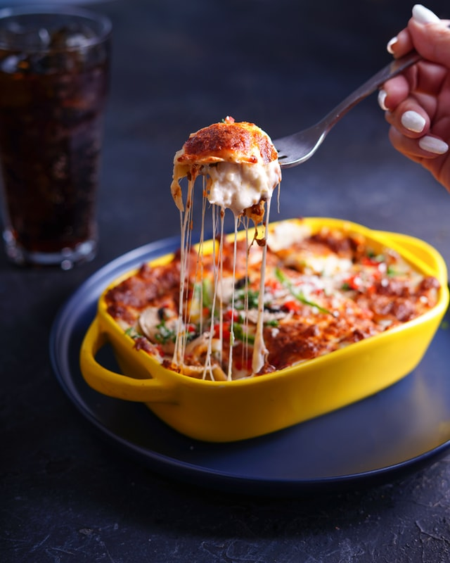

Easiest Lasagna Ever

Nothing beats classic lasagna. And this is the easiest recipe you will ever make. It can be made ahead and it’s freezer-friendly too!
I have a friend on bedrest for the next few days and her only request from me was homemade lasagna.
It’s a true classic and all but I asked if she wanted anything else – maybe something fancier? She said no. Just lasagna
So here it is. Classic homemade lasagna, made the easiest way of all.
20 min prep time.
That’s it.
And the end result?
Well, it’s perfection.
Ingredients:
- 9 lasagna noodles
- 1 tablespoon olive oil
- 1 pound ground beef*
- 1 onion, diced
- Kosher salt and freshly ground black pepper, to taste
- 1 (28-ounce) can crushed tomatoes
- 1 tablespoon Italian seasoning
- 1 (15-ounce) package whole milk ricotta
- 3 ½ cups shredded mozzarella, divided
- 1 large egg, beaten
- ¼ cup freshly grated Parmesan
- 2 tablespoons chopped fresh parsley leaves
Steps:
- Preheat oven to 350 degrees F. Lightly oil a 9x13 baking dish or coat with nonstick spray.
- In a large pot of boiling salted water, cook lasagna noodles according to package instructions.
- Heat olive oil in a large skillet over medium high heat. Add ground beef and onion and cook until beef has browned, about 3-5 minutes, making sure to crumble the beef as it cooks; season with salt and pepper, to taste. Drain excess fat. Stir in tomatoes and Italian seasoning until well combined.
- In a medium bowl, combine ricotta, 1/2 cup mozzarella and egg; set aside.
- Spread 1 cup tomato mixture onto the bottom of a 9×13 baking dish; top with 3 lasagna noodles, 1/2 of the ricotta cheese mixture and 1 cup mozzarella cheese. Repeat with a second layer. Top with remaining noodles, tomato mixture, 1 cup mozzarella cheese and Parmesan.*
- Place into oven and bake for 35-45 minutes, or until bubbling. Then broil for 2-3 minutes, or until top is browned in spots.
- Let cool 15 minutes. Serve, garnished with parsley, if desired.
Notes:
*Italian pork sausage can be substituted.
*MAKE-AHEAD: Cover lasagna tightly with plastic wrap. Refrigerate up to 24 hours. To bake, remove plastic wrap, cover and bake for 40 minutes. Uncover; bake for an additional 10-15 minutes, or until completely cooked through.
*TO FREEZE: Cover lasagna tightly with plastic wrap, then aluminum foil. Freeze up to 3 months. To bake, remove plastic wrap, cover and bake for 90 minutes. Uncover; bake for an additional 10-15 minutes, or until completely cooked through.